library(readxl)
PS1Data <- read_excel("C:/Users/Jt_an/Google Drive/GSE - Finance/1 trim_/Asset pricing_/Problem Sets/PS1/PS1Data.xlsx")gamma<-2:100
m<-t(sapply(PS1Data$dc,function(x) x**-gamma))
cov_<--cov(m,(PS1Data$`Rm-r`+(PS1Data$r-1)))
Rp<-cov_*mean(PS1Data$r)
plot(gamma,Rp,type="l",col="blue",main="Risk premium for all Gammas",xlab="Gamma")
abline(h=mean(PS1Data$`Rm-r`),col="red")
legend("bottomright",c("Estimated Risk premium","mean of Rm-r"),fill=c("blue","red"),bty="n")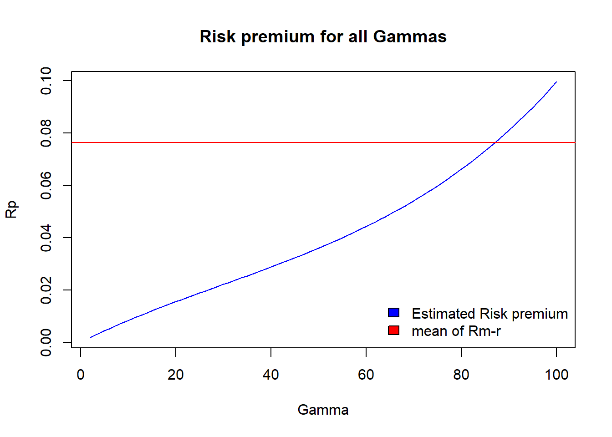
gamma[which.min(abs(mean(PS1Data$`Rm-r`)-Rp))]## [1] 87rf<-apply(m,2,function(x) 1/mean(x))
plot(gamma,rf,type="l",col="blue",main="Risk free for all gammas")
abline(h=mean(PS1Data$r),col="red")
legend("topleft",c("Estimated Risk Free","mean of Rf"),fill=c("blue","red"),bty="n")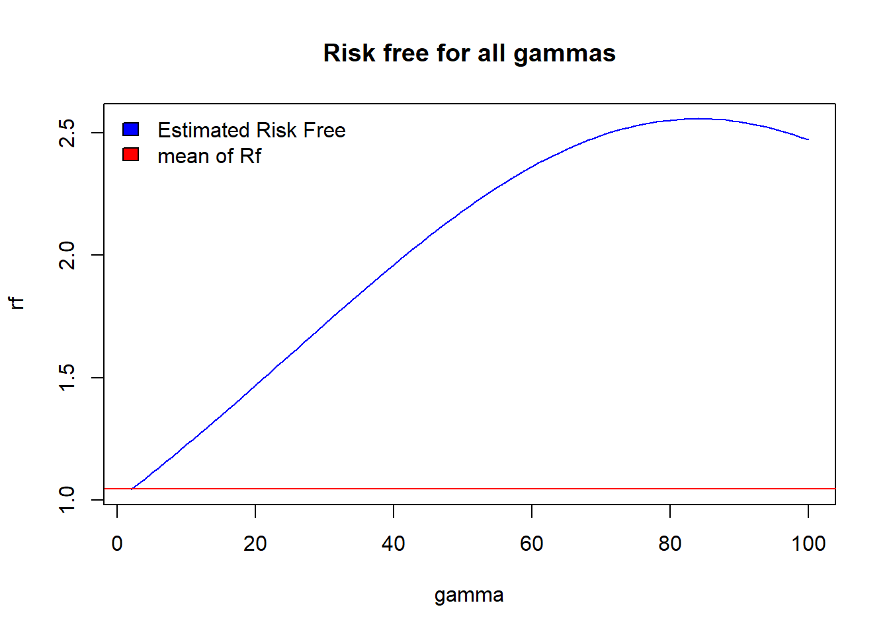
gamma[which.min(abs(rf-mean(PS1Data$r)))]## [1] 2Given that \(\gamma\) is the risk aversion coefficient it makes sense to demand higher risk premium when your risk aversion is higher. Taking that particular utility function to the data gives us this positive relation between \(\gamma\) and risk premium. When observing the mean of \(R_m - r\), i.e., the realized risk premium, comparing to our estimations we see that the model implies a \(\gamma=87\) in order to obtain the same results as in the data. The implication of such \(\gamma\) is that, if this model is correct, we are extremely risk averse. In reality the estimations of the risk aversion coefficient are not that higher.
Since \((1+r)=1/E(m)\), \(m=dc^{-\gamma}\) and most of \(dc\) observations are higher than 1, \(m\) is a decreasing function with respect to \(\gamma\). So, \((1+r)\) depends positively on \(\gamma\). This is why we seee in the plot a increasing function of \(Rf\) respect to \(\gamma\). The \(\gamma\) such that is near the realized value of the risk free is \(\gamma=2\), which implies that consumers are extremely low risk averse.
We can conclude that taking that model to the data we have to reject the model. If the model was well specified, the values of \(\gamma\) in each case should be the same.
\[\begin{equation} m=\frac{U'(c_t)}{U'(c_{t-1})}=\left(\frac{c_t}{c_{t-1}}\right)^{-\gamma}\left(\frac{x_{t-1}}{x_{t-2}}\right)^{\gamma-1} \end{equation}\]
\(U(c_t)=\frac{\left(\frac{c_t}{x_{t-1}}\right)^{1-\gamma}}{1-\gamma}\) \(U(c_{t-1})=\frac{\left(\frac{c_{t-1}}{x_{t-2}}\right)^{1-\gamma}}{1-\gamma}\)
\(U'(c_t)=\frac{{C_t}^{-\gamma}}{{x_{t-1}}^{1-\gamma}}\) \(U'(c_{t-1})=\frac{{c_{t-1}}^{-\gamma}}{{x_{t-2}}^{1-\gamma}}\)
\(\frac{U'(c_t)}{U'(c_{t-1})}=\frac{\frac{{c_t}^{-\gamma}}{{x_{t-1}}^{1-\gamma}}}{\frac{{c_{t-1}}^{-\gamma}}{{x_{t-2}}^{1-\gamma}}}=\frac{c_t^{-\gamma}{x_{t-2}}^{1-\gamma}}{{c_{t-1}}^{-\gamma}{x_{t-1}}^{1-\gamma}}=\left(\frac{c_t}{c_{t-1}}\right)^{-\gamma}\left(\frac{x_{t-2}}{x_{t-1}}\right)^{1-\gamma}=\left(\frac{c_t}{c_{t-1}}\right)^{-\gamma}\left(\frac{x_{t-1}}{x_{t-2}}\right)^{\gamma-1}\)
dc<-PS1Data$dc[-1]
xc<-PS1Data$dc[-length(PS1Data$dc)]
gamma<-2:100
m_dc<-t(sapply(dc,function(x) x**-gamma))
m_xc<-t(sapply(xc,function(x) x**(gamma-1)))
m_2<-m_dc*m_xc
cov_2<--cov(m_2,(PS1Data$`Rm-r`[-1]+(PS1Data$r[-1]-1)))
Rp_2<-cov_2*mean(PS1Data$r)
plot(gamma,Rp_2,type="l",col="blue",main="Risk premium for all Gammas",xlab="Gamma")
abline(h=mean(PS1Data$`Rm-r`),col="red")
legend("topleft",c("Estimated Risk premium","mean of Rf"),fill=c("blue","red"),bty="n")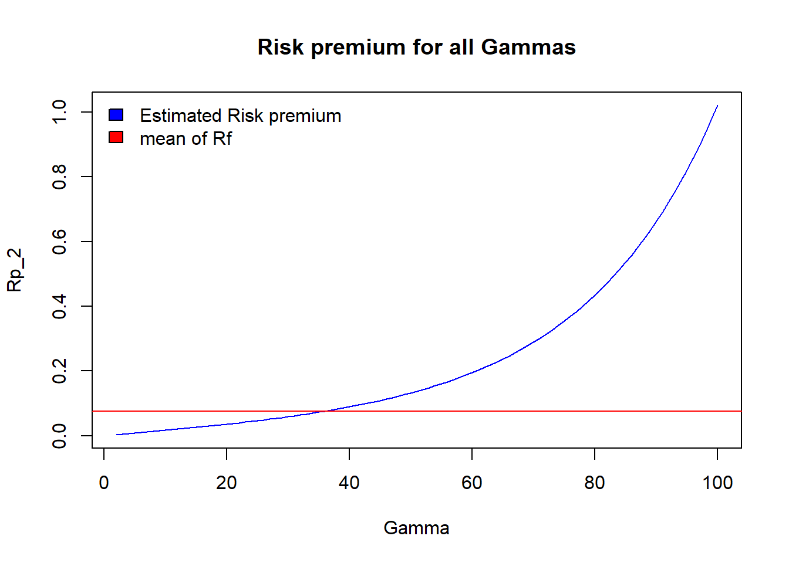
gamma[which.min(abs(mean(PS1Data$`Rm-r`)-Rp_2))]## [1] 36rf_2<-apply(m_2,2,function(x) 1/mean(x))
plot(gamma,rf_2,type="l",col="blue",main="Risk free for all gammas")
abline(h=mean(PS1Data$r),col="red")
legend("bottomleft",c("Estimated Risk Free","mean of Rf"),fill=c("blue","red"),bty="n")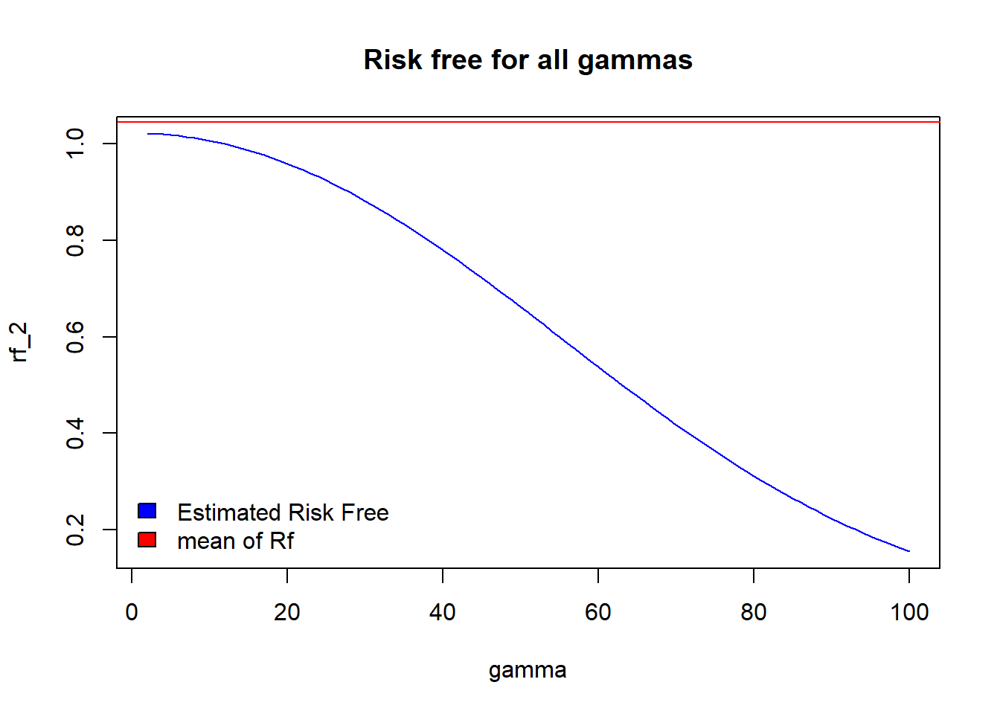
gamma[which.min(abs(rf_2-mean(PS1Data$r)))]## [1] 2The difference between this new model and the first one, is that this models takes into account the lagged growth in consumption. Now consumers not only care in todays change in consumption but in the previous change in consumption. Since \(m=\left(\frac{c_t}{c_{t-1}}\right)^{-\gamma}\left(\frac{x_{t-1}}{x_{t-2}}\right)^{\gamma-1}\), a higher risk aversion implies that consumption tomorrow is less valuable. However, the higher the risk aversion, the higher consumers value the lagged changed in consumption.
Taking this model to the data, the \(\gamma\) that explains the observerd risk premium is \(\gamma=36\). This model implies that consumer are less risk averse than in the other model. And \(\gamma=2\) is the one which explains the realized value of the risk free. Again, the two values are quite different, so the model is not well specified. However, this model does a better job since \(\gamma\) are now closer.
One other difference with respect the older model is that now the risk free depends negatively on \(\gamma\). That means that a risk averse consumer will accept a risk free assets with a lower return than a consumer who is not that risk averse.
library(ggplot2)IndustryMonthly=read.csv("C:/Users/Jt_an/Google Drive/GSE - Finance/1 trim_/Asset pricing_/Problem Sets/PS2/Monthly.csv", sep=";")/100
R=apply(IndustryMonthly[,-1],2,mean)
V=cov(IndustryMonthly[,-1])
v1<-rep(1,length(R))
v1t<-t(v1)
w1=(solve(V)%*%R)/as.vector(((v1t%*%solve(V)%*%R)))
w2=(solve(V)%*%v1)/as.vector(v1t%*%solve(V)%*%v1)
mean_w1=t(w1)%*%R
mean_w2=t(w2)%*%R
var_w1=t(w1)%*%V%*%w1
var_w2=t(w2)%*%V%*%w2
sd_w1=sqrt(var_w1)
sd_w2=sqrt(var_w2)
cov_w1_w2=t(w1)%*%V%*%w2
df1<-data.frame(Mean_w1=mean_w1, Mean_w2=mean_w2,Sd_w1=sd_w1,Sd_w2=sd_w2,cov_w1_w2=cov_w1_w2)
df1## Mean_w1 Mean_w2 Sd_w1 Sd_w2 cov_w1_w2
## 1 0.01021514 0.008957041 0.03872102 0.03625826 0.001314662p_d=seq(-7,0,by=0.01)
d_ret_port=c()
d_var_port=c()
for (i in (1:length(p_d))){
d_ret_port[i]=p_d[i]*mean_w1+(1-p_d[i])*mean_w2
d_var_port[i]=(p_d[i]**2)*var_w1+((1-p_d[i])**2)*var_w2+2*cov_w1_w2*p_d[i]*(1-p_d[i])
}
d_sd_port=sqrt(d_var_port)
p_u=seq(0,7,by=0.01)
u_ret_port=c()
u_var_port=c()
for (i in (1:length(p_u))){
u_ret_port[i]=p_u[i]*mean_w1+(1-p_u[i])*mean_w2
u_var_port[i]=(p_u[i]**2)*var_w1+((1-p_u[i])**2)*var_w2+2*cov_w1_w2*p_u[i]*(1-p_u[i])
}
u_sd_port=sqrt(u_var_port)mvp_sd=u_sd_port[which.min(u_sd_port)]
mvp_r=u_ret_port[which.min(u_sd_port)]
print(c("MVP",mvp_r,mvp_sd))## [1] "MVP" "0.00895704118652522" "0.0362582629394413"ggplot(data=NULL,aes(u_sd_port,u_ret_port,color="efficient frontier"))+
geom_line()+
geom_line(aes(d_sd_port,d_ret_port), color = "red",linetype = "dashed")+
geom_point(aes(u_sd_port[which.min(u_sd_port)],u_ret_port[which.min(u_sd_port)],color="MVP"),shape=21,size=4,fill="white")+
xlab("risk")+
ylab("returns")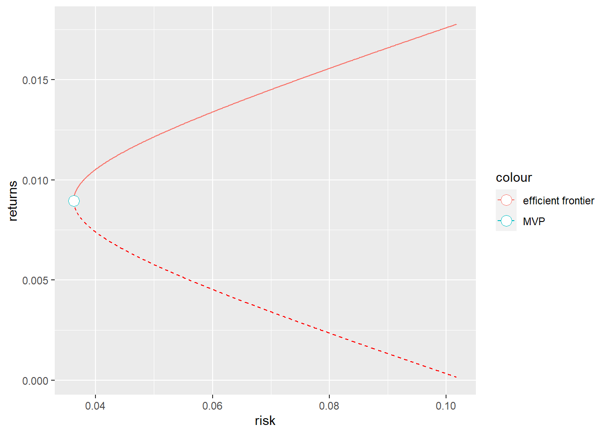
pos=length(u_sd_port[(u_sd_port<0.05)])
ggplot(data=NULL, aes(u_sd_port,u_ret_port,color="efficient frontier"))+
geom_line()+
geom_line(aes(d_sd_port,d_ret_port),color="red",linetype = "dashed")+
geom_point(aes(0.05,u_ret_port[pos],color="Portfolio"),shape=21,size=4,fill="white")+
xlab("risk")+
ylab("return")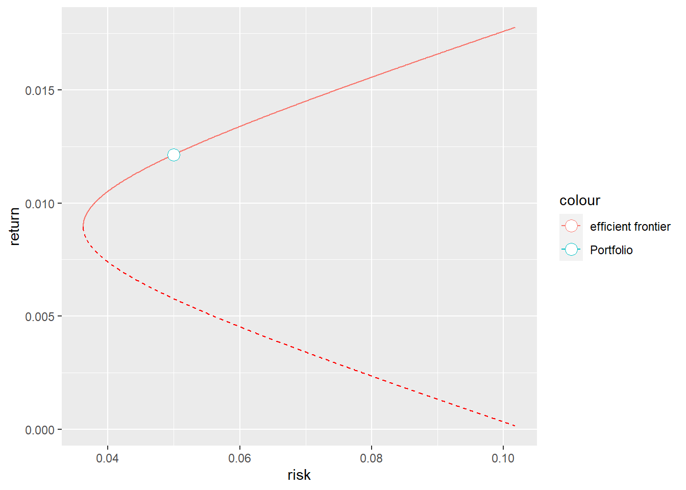
erp=p_u[pos]*mean_w1+(1-p_u[pos])*mean_w2
sdp=sqrt((p_u[pos]**2)*var_w1+((1-p_u[pos])**2)*var_w2+2*cov_w1_w2*p_u[pos]*(1-p_u[pos]))
comp=p_u[pos]*w1+(1-p_u[pos])*w2
comp## [,1]
## Food 0.41398242
## Mines 0.15726770
## Oil 0.27928083
## Clths 0.10745098
## Durbl -0.55103091
## Chems 0.19082473
## Cnsum 0.47279619
## Cnstr -0.10894582
## Steel -0.55861911
## FabPr -0.07189721
## Machn 0.58248268
## Cars 0.28366350
## Trans 0.02996680
## Utils -0.05122777
## Rtail 0.15451875
## Finan -0.04844809
## Other -0.28206567print(c("Expected Return", erp, "Standard Deviation", sdp))## [1] "Expected Return" "0.0121400191324028" "Standard Deviation" "0.0499662263608099"rf=0.004
wt=(solve(V)%*%(R-rf*v1))/as.vector(((v1t%*%solve(V)%*%(R-rf*v1))))
E_wt=t(wt)%*%R
var_wt=t(wt)%*%V%*%wt
sd_wt=sqrt(var_wt)
ggplot(data=NULL, aes(u_sd_port,u_ret_port,color="old-frontier"))+
geom_line()+
geom_line(aes(d_sd_port,d_ret_port),color="red",linetype = "dashed")+
geom_abline(aes(intercept = rf, slope=(E_wt-rf)/(sd_wt),color="New Frontier"))+
geom_point(aes(0,0.004, color="Risk free"),shape=21,size=4,fill="white")+
geom_point(aes(sd_wt,E_wt, color="Tangent Portfolio"),shape=21,size=4, fill="white")+
xlab("risk")+
ylab("return")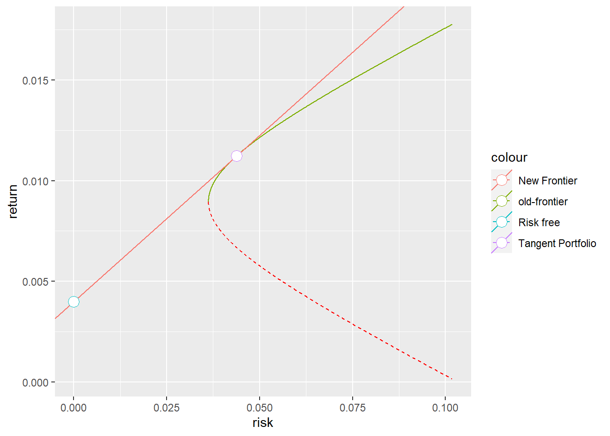
\(Max(E(R_p)-\alpha\sigma_p^2)\) where \(E(R_P)=pE(R_T)+(1-p)rf\) and \(\sigma^2_P=p^2\sigma_T^2\). So we must maximize \(U=pE(R_T)+(1-p)r_f-\alpha p^2\sigma_T^2\) respect to \(p\).
\(\frac{\partial U}{\partial p}=E(R_T)-r_f-2\alpha p\sigma_T^2=0\), solving for p:
\(p=\frac{E(R_T)-r_f}{2\alpha \sigma^2_T}\)
alpha=4
p=(E_wt-rf)/(2*alpha*var_wt)
rfp=1-p
rownames(rfp)="Risk free"
total=sum(as.numeric(p)*comp)+rfp
rownames(total)="Total weight"
rbind(as.numeric(p)*comp,rfp,total)## [,1]
## Food 0.19511940
## Mines 0.07412387
## Oil 0.13163146
## Clths 0.05064411
## Durbl -0.25971349
## Chems 0.08994007
## Cnsum 0.22283968
## Cnstr -0.05134866
## Steel -0.26328999
## FabPr -0.03388680
## Machn 0.27453743
## Cars 0.13369711
## Trans 0.01412404
## Utils -0.02414482
## Rtail 0.07282823
## Finan -0.02283470
## Other -0.13294402
## Risk free 0.52867709
## Total weight 1.00000000E_OP=rfp*rf+as.numeric(p)*E_wt
sd_OP=p*sd_wt
ggplot(data=NULL, aes(u_sd_port,u_ret_port,color="Old Frontier"))+
geom_line()+
geom_line(aes(d_sd_port,d_ret_port),color="red",linetype = "dashed")+
geom_abline(aes(intercept = rf, slope=(E_wt-rf)/(sd_wt),color="Efficient Frontier"))+
geom_point(aes(0,0.004, color="Risk free"),shape=21,size=4,fill="white")+
geom_point(aes(sd_wt,E_wt, color="Tangent Portfolio"),shape=21,size=4, fill="white")+
geom_point(aes(sd_OP,E_OP,color="Investors optimal portfolio"),shape=21,size=4,fill="white")+
xlab("risk")+
ylab("return")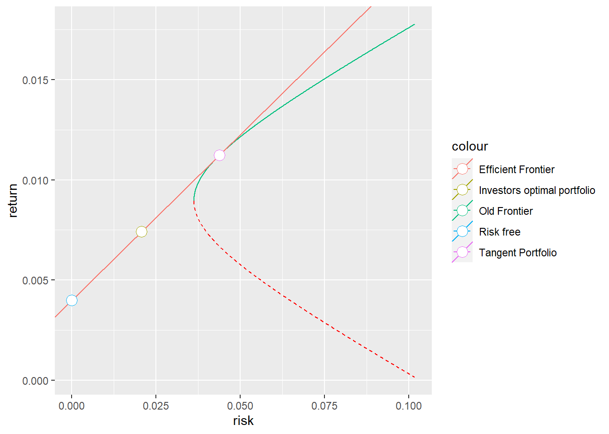
print(c("Portfolio Return",round(E_OP,5),"Standard Error",round(sd_OP,5)))## [1] "Portfolio Return" "0.00741" "Standard Error" "0.02064"rf2=0
wt2=(solve(V)%*%(R-rf2*v1))/as.vector(((v1t%*%solve(V)%*%(R-rf2*v1))))
E_wt2=t(wt2)%*%R
var_wt2=t(wt2)%*%V%*%wt2
sd_wt2=sqrt(var_wt2)
rf3=0.006
wt3=(solve(V)%*%(R-rf3*v1))/as.vector(((v1t%*%solve(V)%*%(R-rf3*v1))))
E_wt3=t(wt3)%*%R
var_wt3=t(wt3)%*%V%*%wt3
sd_wt3=sqrt(var_wt3)
ggplot(data=NULL, aes(u_sd_port[u_ret_port> as.numeric(E_wt2) & u_ret_port<as.numeric(E_wt3)],u_ret_port[u_ret_port>as.numeric(E_wt2) & u_ret_port<as.numeric(E_wt3)],color="Efficient Frontier"))+
geom_line()+
geom_line(aes(c(0,sd_wt2),c(0,E_wt2),color="Efficient Frontier"))+
geom_line(aes(c(sd_wt3,sd_wt3*2),c(E_wt3,E_wt3+sd_wt3*(E_wt3-rf3)/(sd_wt3)),color="Efficient Frontier"))+
geom_point(aes(sd_wt2,E_wt2, color="Tangent Portfolio1"),shape=21,size=4, fill="white")+
geom_point(aes(sd_wt3,E_wt3, color="Tangent Portfolio2"),shape=21,size=4, fill="white")+
xlab("risk")+
ylab("return")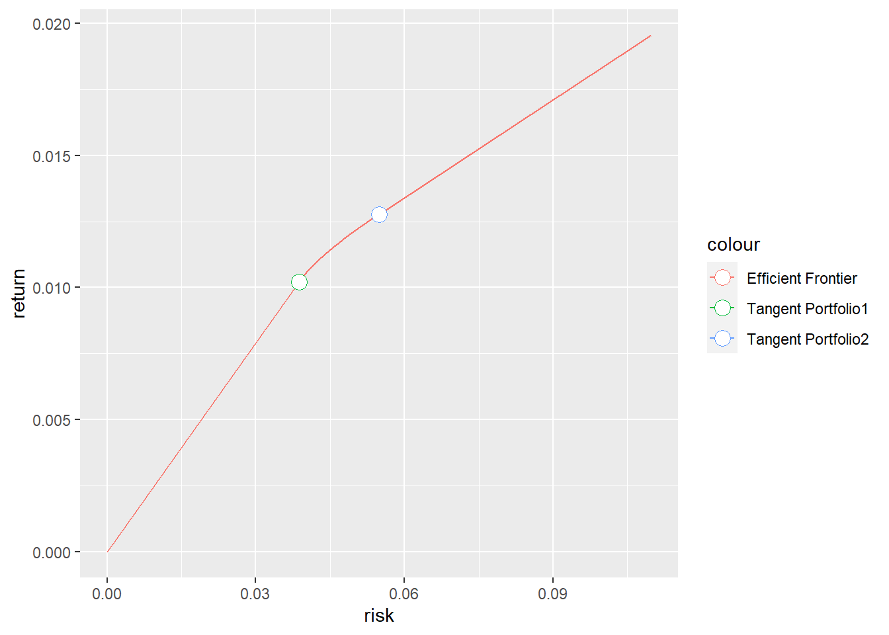
library(sandwich)
library(plot3D)
library(car)
Portfolio25 <- read.csv("C:/Users/Jt_an/Google Drive/GSE - Finance/1 trim_/Asset pricing_/Problem Sets/PS3/Portfolio25.csv", sep=";")
Factors3<- read.csv("C:/Users/Jt_an/Google Drive/GSE - Finance/1 trim_/Asset pricing_/Problem Sets/PS3/3Factors.csv", sep=";")
Factors3<-Factors3[c(-661:-1122),c(-6,-7)]
Factors5 <- read.csv("C:/Users/Jt_an/Google Drive/GSE - Finance/1 trim_/Asset pricing_/Problem Sets/PS3/5Factors.csv", sep=";")
colnames(Factors3)[1]="Dates"
colnames(Factors5)[1]="Dates"
colnames(Portfolio25)[1]="Dates"
Factors3$Dates <- as.Date(paste(Factors3$Dates, "01", sep=""), "%Y%m%d")
Factors5$Dates <- as.Date(paste(Factors5$Dates, "01", sep=""), "%Y%m%d")
Portfolio25$Dates <- as.Date(paste(Portfolio25$Dates, "01", sep=""), "%Y%m%d")
Factors3[,c(2:length(Factors3))]<-Factors3[,c(2:length(Factors3))]/100
Factors5[,c(2:length(Factors5))]<-Factors5[,c(2:length(Factors5))]/100
Portfolio25[,c(2:length(Portfolio25))]<-Portfolio25[,c(2:length(Portfolio25))]/100Ereturn=Portfolio25[,2:26] - Factors3$RF
mean_Ereturn=as.data.frame(apply(Ereturn[,c(1:length(Ereturn))],2,mean))
matrix_Ereturn<-matrix(as.vector(mean_Ereturn[,1]),nrow=5,ncol=5)
rownames(matrix_Ereturn)=c("BM1","BM2","BM3","BM4","BM5")
colnames(matrix_Ereturn)=c("ME1","ME2","ME3","ME4","ME5")
as.data.frame(matrix_Ereturn)## ME1 ME2 ME3 ME4 ME5
## BM1 0.002570662 0.004969903 0.004944982 0.006190803 0.004834288
## BM2 0.007824065 0.007494220 0.007801842 0.006015517 0.005190511
## BM3 0.007726098 0.008562809 0.007278445 0.006796744 0.005352152
## BM4 0.009897741 0.008920026 0.008555186 0.008126045 0.004686283
## BM5 0.010698936 0.009519132 0.009910895 0.007986829 0.006353497par(cex=1, mai=c(1,1,1,1))
persp3D(z = matrix_Ereturn, theta = 45, expand = 0.8,border = "white",
main="Excess Returns",xlab="BM",ylab="ME",zlab="Excess Returns")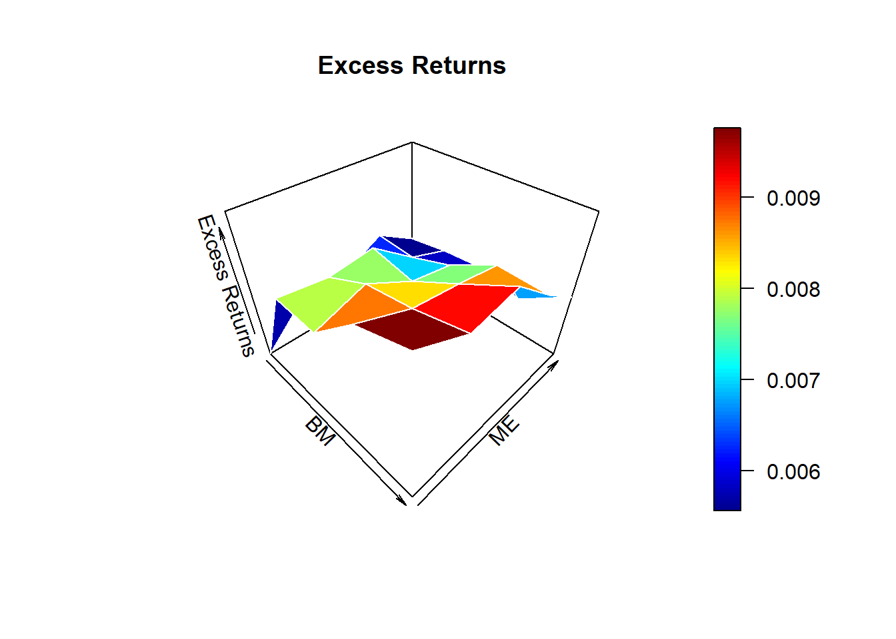
One could expect that this plot would be more or less plain, meaning that all portfolios have the same excess returns. However, it can be seen how excess returns are increasing for portfolios with high book-to-market ratio and for small firms portfolios. One plausible explanation is that those factors (BM and ME) are risk factors. So, they have higher excess returns because they are riskier. Being the riskiest portolios the ones composed of low capitalized firms with high book-to-market ratios.
regs<-apply(Ereturn[,c(1:length(Ereturn))],2, function(x) lm(x~Factors3$Mkt.RF))
alphas<-sapply(regs, function(x) x$coefficients[1])
matrix_alphas<-matrix(alphas,nrow=5,ncol=5)
rownames(matrix_alphas)=c("BM1","BM2","BM3","BM4","BM5")
colnames(matrix_alphas)=c("ME1","ME2","ME3","ME4","ME5")
as.data.frame(matrix_alphas)## ME1 ME2 ME3 ME4 ME5
## BM1 -0.004651660 -0.002122861 -0.001778042 -3.353608e-05 -0.0001369658
## BM2 0.001528296 0.001509825 0.002115513 5.497773e-04 0.0004482965
## BM3 0.002092642 0.003179535 0.002157932 1.663809e-03 0.0010395615
## BM4 0.004701460 0.003763836 0.003664824 3.287013e-03 0.0002267887
## BM5 0.005287916 0.003826157 0.004516478 2.461580e-03 0.0014639891par(cex=1, mai=c(1,1,1,1))
persp3D(z = matrix_alphas, theta = 45, expand = 1.1,
border = "white", main="Alphas for each portfolio",xlab="BM",ylab="ME",zlab="Alpha")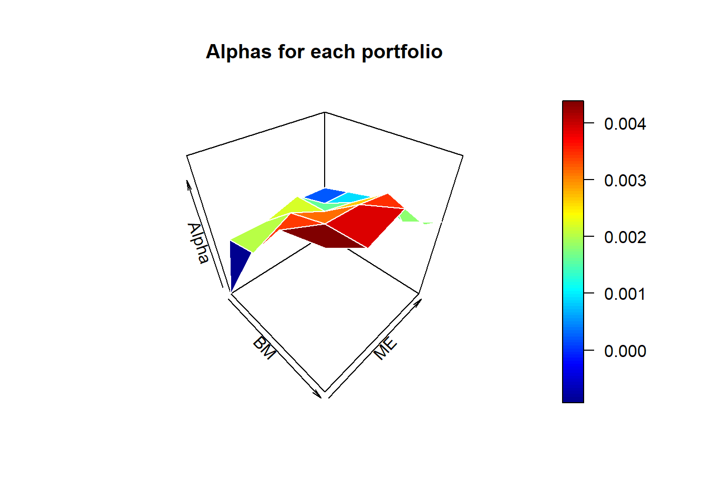
residuals<-sapply(regs, function(x) x$residuals)
covm<-cov(residuals)
covm_inv<-solve(covm)
Ftest<-((660-25-1)/25)*(1/(1+(mean(Factors3$Mkt.RF)/sd(Factors3$Mkt.RF))^2))*
t(alphas)%*%covm_inv%*%t(t(alphas))
pf(Ftest,25,634,lower.tail=F)## [,1]
## [1,] 3.943519e-12As expected, we got a plot pretty similar than before. Being the portfolios with high BM and low ME those with higher alphas, so those are the portfolios that deviate the most from CAPM predictions. If CAPM was valid, the alphas should be equal to zero. If they are not equal than zero the CAPM is wrong. Alphas greater than zero mean either that we can achieve higher returns without increasing risk, or that we are missing some risk factors.
The p-value of the GRS test is 3.943519e-12, meaning that we reject the null hyphotesis that all alphas are equal to zero. So, we reject the validity of CAPM.
betas<-sapply(regs, function(x) x$coefficients[2])
reg2<-lm(mean_Ereturn[,1]~betas)
summary(reg2)##
## Call:
## lm(formula = mean_Ereturn[, 1] ~ betas)
##
## Residuals:
## Min 1Q Median 3Q Max
## -0.0034011 -0.0011828 0.0005559 0.0012309 0.0035124
##
## Coefficients:
## Estimate Std. Error t value Pr(>|t|)
## (Intercept) 0.010816 0.002973 3.637 0.00138 **
## betas -0.003402 0.002719 -1.251 0.22347
## ---
## Signif. codes: 0 '***' 0.001 '**' 0.01 '*' 0.05 '.' 0.1 ' ' 1
##
## Residual standard error: 0.001972 on 23 degrees of freedom
## Multiple R-squared: 0.06372, Adjusted R-squared: 0.02301
## F-statistic: 1.565 on 1 and 23 DF, p-value: 0.2235mean_rm<-mean(Factors3$Mkt.RF)
mean_rm## [1] 0.005072424mean_rf<-mean(Factors3$RF)
mean_rf## [1] 0.003830758H0_1<-c("(Intercept)=0")
H0_2<-c("betas=0.005072424")
linearHypothesis(reg2,H0_1)## Linear hypothesis test
##
## Hypothesis:
## (Intercept) = 0
##
## Model 1: restricted model
## Model 2: mean_Ereturn[, 1] ~ betas
##
## Res.Df RSS Df Sum of Sq F Pr(>F)
## 1 24 0.00014089
## 2 23 0.00008944 1 5.145e-05 13.231 0.001378 **
## ---
## Signif. codes: 0 '***' 0.001 '**' 0.01 '*' 0.05 '.' 0.1 ' ' 1linearHypothesis(reg2,H0_2)## Linear hypothesis test
##
## Hypothesis:
## betas = 0.005072424
##
## Model 1: restricted model
## Model 2: mean_Ereturn[, 1] ~ betas
##
## Res.Df RSS Df Sum of Sq F Pr(>F)
## 1 24 0.00012721
## 2 23 0.00008944 1 3.7771e-05 9.7131 0.004853 **
## ---
## Signif. codes: 0 '***' 0.001 '**' 0.01 '*' 0.05 '.' 0.1 ' ' 1The CAPM implies that \(\gamma_0=0\) (we substracted risk free from the returns, so we are regressing the excess returns on betas) and \(\gamma_1=E(R_M-R_f)\). So, we have to test if \(\gamma_0=0\) and if \(\gamma_1=0.005072424\). We reject both null hypothesis at 99% level of confidence as p-values are \(p-value_{\gamma_0}=0.001378\) and \(p-value_{\gamma_1}=0.004853\), so again we reject CAPM.
betas_2<-data.frame()
for (j in 1:length(Ereturn)){
for (i in 1:(length(Ereturn$SMALL.LoBM)-36)){
regs2<-lm(Ereturn[i:(i+35),j]~Factors3$Mkt.RF[i:(i+35)])
betas_2[i,j]<-regs2$coefficients[2]
}
}
names(betas_2)=names(Ereturn[1:25])
estimators<-data.frame(gamma_0=rep(0,624),
gamma_1=rep(0,624))
for (i in 1:(length(Ereturn$SMALL.LoBM)-36)){
reg3<-lm(unlist(Ereturn[(i+36),1:25])~unlist(betas_2[i,]))
estimators$gamma_0[i]<-reg3$coefficients[1]
estimators$gamma_1[i]<-reg3$coefficients[2]
}
gamma_0<-mean(estimators$gamma_0)
gamma_1<-mean(estimators$gamma_1)
sd_gamma_0<-sqrt(var(estimators$gamma_0)/length(estimators$gamma_0))
sd_gamma_1<-sqrt(var(estimators$gamma_1)/length(estimators$gamma_1))
(1-pnorm((gamma_0)/(sd_gamma_0)))## [1] 0.000539865(pnorm((gamma_1 - mean(Factors3$Mkt.RF[37:length((Factors3$Mkt.RF))]))/(sd_gamma_1)))## [1] 0.01068794Now \(sd(\gamma_0)=0.002484676\) and \(sd(\gamma_1)=0.002827005\), in Q3 OLS \(sd(\gamma_0)=0.002973\) and \(sd(\gamma_0)=0.002719\). The difference between both methods is that in Q3 we regressed the mean excess returns on betas, now in the second step we do not regress the mean of excess returns but we compute rolling window regressions. The standard errors should be different. This is because in Q3 the factor premia \(\gamma\) aren’t estimated with the same time-averaging techniques of the Fama-MacBeth method. Errors in Q3 are almost certainly heteroskedastic and autocorrelated, while we assumed no autocorrelation and homoskedasticity. Now, in Q4 by computing the variance from the time series ofestimated coefficients, we are not making any assumption about the errors in the CSR.
Testing again that \(\gamma_0=0\) and \(\gamma_1=E(R_M-R_f)\) we reject both null hypothesis with p-value of \(p-value_{\gamma_0}=0.000539865\) and \(p-value_{\gamma_1}=0.01068794\). So we reject again CAPM.
regs4<-apply(Ereturn[,c(1:length(Ereturn))],2,
function(x) lm(x~Factors3$Mkt.RF+Factors3$SMB+Factors3$HML))
alphas2<-sapply(regs4, function(x) x$coefficients[1])
matrix_alphas2<-matrix(alphas2,nrow=5,ncol=5)
rownames(matrix_alphas2)=c("BM1","BM2","BM3","BM4","BM5")
colnames(matrix_alphas2)=c("ME1","ME2","ME3","ME4","ME5")
as.data.frame(matrix_alphas2)## ME1 ME2 ME3 ME4 ME5
## BM1 -0.0049758591 -1.670382e-03 -8.288505e-04 0.0011986486 1.666713e-03
## BM2 -0.0001090178 6.279987e-05 8.302362e-04 -0.0004439674 3.332602e-04
## BM3 -0.0003275903 7.616360e-04 -4.607832e-05 -0.0002538807 9.084901e-05
## BM4 0.0017074064 6.612621e-04 7.748190e-04 0.0008169390 -2.159445e-03
## BM5 0.0013293618 -3.421556e-04 6.842319e-04 -0.0010477452 -1.717761e-03par(cex=1, mai=c(1,1,1,1))
persp3D(z = matrix_alphas2, theta = 45, expand = 1.1,border = "white",
main="Alphas 3 Factor Model",xlab="BM",ylab="ME",zlab="Alpha")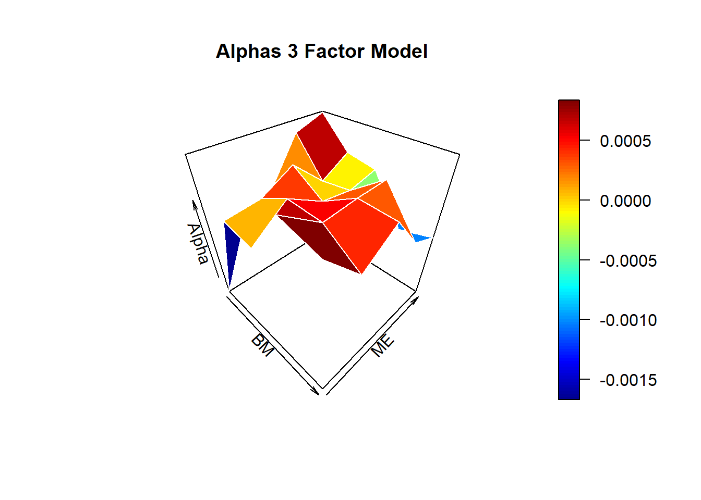
residuals2<-sapply(regs4, function(x) x$residuals)
covm2<-cov(residuals2)
covm_inv2<-solve(covm2)
Ftest2<-((660-25-1)/25)*(1/(1+(mean(Factors3$Mkt.RF)/sd(Factors3$Mkt.RF))^2))*
t(alphas2)%*%covm_inv2%*%t(t(alphas2))
pf(Ftest2,25,634,lower.tail=F)## [,1]
## [1,] 7.668097e-10regs5<-apply(Ereturn[,c(1:length(Ereturn))],2,
function(x) lm(x~Factors5$Mkt.RF+Factors5$SMB+Factors5$HML+Factors5$RMW+Factors5$CMA))
alphas3<-sapply(regs5, function(x) x$coefficients[1])
matrix_alphas3<-matrix(alphas3,nrow=5,ncol=5)
rownames(matrix_alphas3)=c("BM1","BM2","BM3","BM4","BM5")
colnames(matrix_alphas3)=c("ME1","ME2","ME3","ME4","ME5")
as.data.frame(matrix_alphas3)## ME1 ME2 ME3 ME4 ME5
## BM1 -0.0027877272 -7.394001e-04 2.413889e-04 0.0018570498 0.0011545494
## BM2 0.0013010470 -2.360439e-04 1.848620e-04 -0.0017477582 -0.0008465007
## BM3 -0.0002080256 -3.497707e-06 -8.659603e-04 -0.0013212948 -0.0007449670
## BM4 0.0018491742 1.271777e-04 -5.729468e-05 0.0003761968 -0.0024992423
## BM5 0.0012667386 -3.722946e-04 -6.901872e-05 -0.0011797055 -0.0001488723par(cex=1, mai=c(1,1,1,1))
persp3D(z = matrix_alphas3, theta = 45,expand = 1.1,
border = "white", main="Alphas 5 Factor Model",xlab="BM",ylab="ME",zlab="Alpha")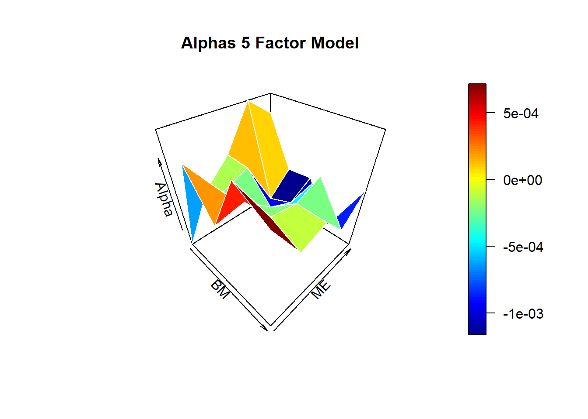
residuals3<-sapply(regs5, function(x) x$residuals)
covm3<-cov(residuals3)
covm_inv3<-solve(covm3)
Ftest3<-((660-25-1)/25)*(1/(1+(mean(Factors3$Mkt.RF)/sd(Factors3$Mkt.RF))^2))*
t(alphas3)%*%covm_inv3%*%t(t(alphas3))
pf(Ftest3,25,634,lower.tail=F)## [,1]
## [1,] 5.902528e-08As we have controlled for BM and for EM risk factors, we don’t see the previous patterns in the plots (where the alphas were higher when we were moving through low BM to high BM and through high ME to low ME portfolios). Now, alphas look more erratic. However, we still reject that all alphas are equal to zero. As we have controlled for more risk factors, we have explained a lot of previous alphas. Notice how in the 5 Factor Models alphas are way lower than in the 3 Factor Model, this is because in the 5FM we are controlling even for more risk factors than in 3FM. Nevertheless, there are still some risk factors that we have not taken into account, this is why we are stil rejecting that all alphas are equal to zero.
| Beta_j1 | Beta_j2 | |
|---|---|---|
| A | 1.4 | 0.8 |
| B | 3.0 | 0.2 |
We have three equations and two unknowns. If none of them is a linear combinations of the others, there won’t be a solution. To solve this problem efficiently we can solve only for two equations and see if the third equation holds with the results obtained.
\[1.4w_a + 3w_b =2.6 \] \[0.8w_a + 0.2w_b=0.35\] \[w_a+w_b=1\] Let’s solve for the first and third equations,
M=matrix(c(1.4,3,1,1),nrow=2,byrow = T)
y=c(2.6,1)
w=solve(M,y)
data.frame("Wa"=w[1],"Wb"=w[2])## Wa Wb
## 1 0.25 0.75Let’s see if with this weights the restrictions hold
round(1.4*w[1]+3*w[2],15)==round(2.6,15)## [1] TRUEround(0.8*w[1]+0.2*w[2],15)==round(0.35,15)## [1] TRUEround(w[1]+w[2],15)==round(1,15)## [1] TRUE\[1.4w_a + 3w_b =2.2 \] \[0.8w_a + 0.2w_b=0.6\] \[w_a+w_b=1\] Again, solving for the first and third equations,
M=matrix(c(1.4,3,1,1),nrow=2,byrow = T)
y=c(2.2,1)
w=solve(M,y)
data.frame("Wa"=w[1],"Wb"=w[2])## Wa Wb
## 1 0.5 0.5Let’s see if with this weights the restrictions hold
round(1.4*w[1]+3*w[2],15)==round(2.2,15)## [1] TRUEround(0.8*w[1]+0.2*w[2],15)==round(0.6,15)## [1] FALSEround(w[1]+w[2],15)==round(1,15)## [1] TRUEFor the first case the restrictions hold. Thus, meanining that in the first case the equations were a linear combination. For the second case there isn’t a solution because the equations are not a linear combination, so the system of equations cannot be solved.
| Beta_j1 | Beta_j2 | |
|---|---|---|
| A | 1.4 | 0.8 |
| B | 3.0 | 0.2 |
| C | 1.0 | 2.0 |
\[1.4w_a + 3w_b +1w_c=2.2 \] \[0.8w_a + 0.2w_b+2w_c=0.6\] \[w_a+w_b+w_c=1\]
M=matrix(c(1.4,3,1,0.8,0.2,2,1,1,1),nrow=3,byrow = T)
y=c(2.2,0.6,1)
w=solve(M,y)
data.frame("Wa"=w[1],"Wb"=w[2],"Wc"=w[3])## Wa Wb Wc
## 1 0.3809524 0.5238095 0.0952381Let’s see if with this weights the restrictions hold
round(1.4*w[1]+3*w[2]+1*w[3],15)==round(2.2,15)## [1] TRUEround(0.8*w[1]+0.2*w[2]+2*w[3],15)==round(0.6,15)## [1] TRUEround(w[1]+w[2]+w[3],15)==round(1,15)## [1] TRUE\[1.4w_a + 3w_b +1w_c=F\] \[0.8w_a + 0.2w_b+2w_c=F\] \[w_a+w_b+w_c=1\] So, the first two restrictions are equal:
\[1.4w_a + 3w_b +1w_c=0.8w_a + 0.2w_b+2w_c \equiv 0.6w_a+2.8w_b-w_c=0\] \[w_a+w_b+w_c=1\]
From the first equation,
\[w_a=\frac{wc-2.8w_b}{0.6} \] Plugging it into the second one,
\[\frac{w_c-2.8w_b}{0.6}+w_b+w_c=1\] \[w_c-2.8w_b+0.6w_b+0.6w_c=0.6\] \[w_b=-\frac{3}{11}+\frac{8}{11}wc\] Substituing \(w_b\) in \(w_a\) equation we get,
\[w_a=\frac{w_c-2.8(\frac{-3}{11}+\frac{8}{11}w_c)}{0.6}=\frac{14}{11}-\frac{19}{11}w_c\]
So, the solution is:
\[w_a=\frac{14}{11}-\frac{19}{11}w_c\]
\[w_b=-\frac{3}{11}+\frac{8}{11}wc\]
\[w_c=w_c\]
| E.Rj | Beta_j1 | Beta_j2 | |
|---|---|---|---|
| A | 0.08 | 0.6 | 1.0 |
| B | 0.12 | 0.2 | 2.0 |
| C | 0.07 | 1.0 | 0.5 |
\[E(R_j)=\lambda_0+\beta_{j1}\lambda_1+\beta_{j2}\lambda_2\]
We must solve,
\[0.08=\lambda_0+0.6\lambda_1+\lambda_2\]
\[0.12=\lambda_0+0.2\lambda_1+2\lambda_2\]
\[0.07=\lambda_0+\lambda_1+0.5\lambda_2\]
M=matrix(c(1,0.6,1,1,0.2,2,1,1,0.5),nrow=3,byrow = T)
y=c(0.08,0.12,0.07)
lambda=solve(M,y)
data.frame("lambda_0"=lambda[1],"lambda_1"=lambda[2],"lambda_2"=lambda[3])## lambda_0 lambda_1 lambda_2
## 1 -0.01 0.05 0.06So, the APT equation is:
\[E(R_j)=-0.01+\beta_{j1}0.05+\beta_{j2}0.06\]
Let’s prove if it holds
round(-0.01+0.6*0.05+1*0.06,15)==round(0.08,15) #For asset A## [1] TRUEround(-0.01+0.2*0.05+2*0.06,15)==round(0.12,15) #For asset B## [1] TRUEround(-0.01+1*0.05+0.5*0.06,15)==round(0.07,15) #For asset C## [1] TRUENow we have four equations and three parameters, unless one of the equations is a linear combination of the others, the system cannot be solved. If the new asset D was a linear combination of the others (so there is a solution), the APT equation would hold for asset D. Let’s see if it holds.
Recall APT equation, \[E_{R_j}^{APT}=-0.01+\beta_{j1}0.05+\beta_{j2}0.06\]
\[E_{R_D}^{APT}=-0.01+2(0.05)-1(0.06)=0.03\]
So, \(E_{R_D}^{APT} \neq E_{R_D}\). It is impossible to find lambda values such that the APT holds for all four assets. Asset D is not a linear combination of the other assets.
Yes, there is an arbitrage opportunity. The stock D is undervalued. Its actual return is higher than the APT return. Thus,the price of asset D must increase. So, we can take a long position in asset D, a short position in the portfolio \(pd\) and borrow \(\frac{0.04-0.03}{1+r_f}=\frac{0.01}{1+rf}\). As \(r_f=-0.01\), we must then borrow \(\frac{0.01}{0.99}=\frac{1}{99}\$\).
| t.0 | t.1 | |
|---|---|---|
| Long asset D | -1 | 1+E(RD)+2F1-F2=1.04+2F1-F2 |
| Short Portfolio D | 1 | -(1+E(RPD)+2F1-F2)=-1.03-2F1+F2 |
| Loan | 1/99 | -(1/99)*(.99)=-0.01 |
| TOTAL | 0.0101010101010101 | 0 |
Let’s find how we can construct this mimicking portfolio. To mimick the betas of asset D these equations must hold,
\[0.6w_a+0.2w_b+w_c=2\] \[w_a+2w_b+0.5w_c=-1\] \[w_a+w_b+w_c=1\]
The weights that solve these equations are,
M=matrix(c(0.6,0.2,1,1,2,0.5,1,1,1),nrow=3,byrow = T)
y=c(2,-1,1)
w=solve(M,y)
data.frame("w_a"=w[1],"w_b"=w[2],"w_c"=w[3])## w_a w_b w_c
## 1 -1.5 -0.5 3So, the strategy is: Long 1 asset D, long 1.5 asset A, long 0.5 asset B and short 3 asset C, and borrow 1/100.
dt=data.frame("t=0"=c("-1","-1.5","-0.5","3",1/99,1/99),"t=1"=c("1(1.04+2F1-F2)","1.5(1.08+0.6F1+F2)",
"0.5(1.12+0.2F1+2F2)", "-3(1.07+F1+0.5F2)","-(1/99)*(.99)=-0.01",0))
row.names(dt)=c("Long Asset D","Long Asset A","Long Asset B","Short Asset C","Loan","TOTAL")
kable(dt) %>%
kable_styling(bootstrap_options = "striped",full_width = F)| t.0 | t.1 | |
|---|---|---|
| Long Asset D | -1 | 1(1.04+2F1-F2) |
| Long Asset A | -1.5 | 1.5(1.08+0.6F1+F2) |
| Long Asset B | -0.5 | 0.5(1.12+0.2F1+2F2) |
| Short Asset C | 3 | -3(1.07+F1+0.5F2) |
| Loan | 0.0101010101010101 | -(1/99)*(.99)=-0.01 |
| TOTAL | 0.0101010101010101 | 0 |
A bond has \(\beta=0\), and the APT equation is \(E(R_j)=-0.01+\beta_{j1}0.05+\beta_{j2}0.06\). \(E(R_f)=-0.01+0*0.05+0*0.06\)
Thus, the return of the risk-free asset is\(\lambda_0=r_f=-0.01\). So, the present value of a 100 face value bond is equal to \(\frac{FV}{1+rf}=\frac{100}{1-1/100}=\frac{10000}{99}=101.01...\)
Let’s find how we can construct this mimicking portfolio. To mimimick the betas of asset D those equations must hold,
\[0.6w_a+0.2w_b+w_c=0\]
\[w_a+2w_b+0.5w_c=0\]
\[w_a+w_b+w_c=1\]
The weights that solve these equations are,
M=matrix(c(0.6,0.2,1,1,2,0.5,1,1,1),nrow=3,byrow = T)
y=c(0,0,1)
w=solve(M,y)
data.frame("w_a"=w[1],"w_b"=w[2],"w_c"=w[3])## w_a w_b w_c
## 1 9.5 -3.5 -5\[E(R_pf)=9.5*E(R_A)-3.5*E(R_B)-5E(R_C)=-0.01\]
dt=data.frame("t=0"=c("95000/99","-35000/99","-50000/99","-10000/99=-101.010101",0),
"t=1"=c("-95000/99(1.08+0.6F1+F2)","35000/99(1.12+0.2F1+2F2)",
"50000/99(1.07+F1+0.5F2)","(10000/99)*(.99)=100",0))
row.names(dt)=c("Short Asset A","Long Asset B","Long Asset C","Bond","TOTAL")
kable(dt) %>%
kable_styling(bootstrap_options = "striped",full_width = F)| t.0 | t.1 | |
|---|---|---|
| Short Asset A | 95000/99 | -95000/99(1.08+0.6F1+F2) |
| Long Asset B | -35000/99 | 35000/99(1.12+0.2F1+2F2) |
| Long Asset C | -50000/99 | 50000/99(1.07+F1+0.5F2) |
| Bond | -10000/99=-101.010101 | (10000/99)*(.99)=100 |
| TOTAL | 0 | 0 |
First, let’s compute the risk-free. We know that \(F=S_t(1+r)^{T-t}\). In our case, \(105=100(1+r)\). So, \(r=5\%\).
The payoffs of a portfolio constructed with one European call option plus investing \(K/(1+r)^{T-t}\), and a portfolio of one European Put option plus one share, are the same. So under the Law of One Price they need to be priced the same. This is known as the Put-Call Parity.
\[c+\frac{K}{(1+r)^{T-t}}=p+S_T\]
In our case,
\[8+\frac{105}{1.05}=108\neq110=10+100\]
The portfolio consisted of the European Call plus the bond is underpriced and the portfolio of the European Put plus the stock is overpriced. Therefore, we can build a strategy consisting of going long in the former and short in the latter.
| t=0 | ST>105 | ST<105 | |
|---|---|---|---|
| Long Call | -8 | ST-105 | 0 |
| Short Put | 10 | 0 | ST-105 |
| Long K/(1+r) bond | -100 | 105 | 105 |
| Short Stock | 100 | -ST | -ST |
| TOTAL | 2 | 0 | 0 |
Let’s define the Call and the Put option according to Black-Scholes formula
Put <- function(S, K, r, Ti, sigma) {
d1 <- (log(S/K) + (r + sigma^2/2)*Ti) / (sigma*sqrt(Ti))
d2 <- d1 - sigma*sqrt(Ti)
-S * pnorm(-d1) + K*exp(-r*Ti)*pnorm(-d2)
}
Call <- function(S, K, r, Ti, sigma) {
d1 <- (log(S/K) + (r + sigma^2/2)*Ti) / (sigma*sqrt(Ti))
d2 <- d1 - sigma*sqrt(Ti)
S * pnorm(d1) - K*exp(-r*Ti)*pnorm(d2)
}
#S: Spot Price
#K: Strike Price
#r: risk-free interest rate
#Ti: Time to Maturity
#sigma: Implied annual volatility
data.frame("European Put Price"=Put(69,70,0.05,0.5,0.35))## European.Put.Price
## 1 6.401408In order to find the implied volatility, what we can do is to try for different volatilities in our Call formula and look for the volatility that gives the most approximate price to 2.5
S <- 15
C <- 2.5
K<-13
Ti<-3/12
r<-0.05
VperSigma <- Call(S,K,r,Ti,seq(0.01,1,0.01))
IV <- which.min(abs(VperSigma-C)) #Note that position of the seq is equal to the volatility
print(paste("Implicit Volatility is around", IV, "%"))## [1] "Implicit Volatility is around 40 %"Let’s check,
Call(15,13,0.05,3/12,0.4)## [1] 2.507234